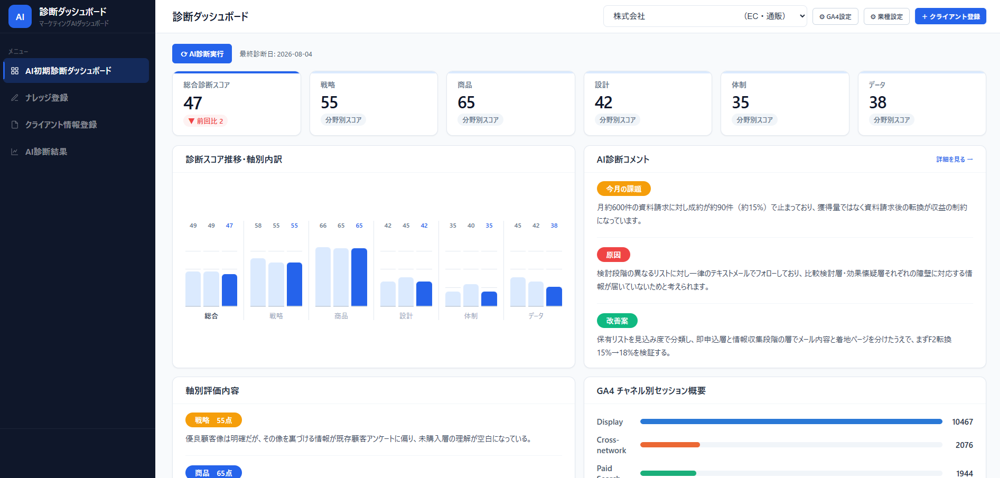

コンサルティング業では、品質そのものが担当者個人に依存しがちです。
判断基準が言語化されていないため、担当者が変わると品質が揺れ、ノウハウも組織に残りません。
初回診断・提案書作成に時間がかかり、新規相談や既存クライアントへの伴走支援に手が回りません。
汎用のAIに投げるだけでは、どのクライアントにも当てはまる無難な出力にしかなりません。
単にAIに診断させるのではなく、過去の商談メモ・診断実績・判断基準からナレッジを構築します。ナレッジは3階層で設計し、蓄積するほど出力が自社仕様に近づきます。
業界一般のセオリーやフレームワーク。どのクライアントにも共通して適用できる土台の部分です。
診断で重視している観点、提案の組み立て方、表現の癖。ヒアリングと過去実績から言語化し、AIの判断基準として組み込みます。
クライアントごとの経緯・制約・過去の打ち手。商談メモや議事録から自動で抽出し、診断のたびに参照します。
事実の収集から提案書の生成まで、根拠と品質のチェックを挟みながら進みます。
現状・目標をヒアリングし、GA4等の実績データを収集します。
戦略・商品・設計・体制・データの5軸で、事実とナレッジDBに基づき診断します。
診断結果と、参照したナレッジ・事実との整合性を確認します。
一般論での水増しがないか、文体が適切かをチェックします。
事実整理→5軸診断→改善提案→年間ロードマップまで、提案書として自動生成します。
5軸のスコアとその推移、AIによる「今月の課題・原因・改善案」、GA4のチャネル別実績までを1画面で確認できます。診断は画面上の「AI診断実行」から実行し、結果はクライアントごとに蓄積されます。

ヒアリングからナレッジ蓄積、提案書の出力までを一気通貫で構築します。
診断に必要な項目を構造化し、回答をそのまま診断エンジンに渡せる形にします
感覚ではなく実データを根拠として診断に組み込みます
テキストから要点を抽出し、ナレッジDBへ蓄積。AIの下書きは承認フローを挟み、人の確認を経て正式登録します
どのナレッジ・どの事実を参照したかを明示し、出力の妥当性を確認できるようにします
事実整理→5軸診断→改善提案→年間ロードマップ→90日プランをプレゼン可能な形で出力します
お客様のPC上で稼働するため月額サーバー費用は不要。管理画面はローカル限定に制限し、意図しない外部送信が起きない設計にします
まず出力品質を確認してから導入をご判断いただけるよう、ベーシックプランをご用意しています。表示価格はすべて税抜です。
導入前にAI診断レポートの品質を確認したい方へ
AI診断／提案書・ナレッジ蓄積の仕組み（ダッシュボード）を構築したい方へ
マーケコンサル業務そのものを自動化したい方へ
※ プレミアムの追加機能は、下記の例からご希望のものを選定し、組み合わせに応じて個別にお見積もりします。
定例MTG議事録の自動要約→アクション抽出／月次・週次レポートの自動生成・送付／KPI進捗の自動モニタリング＋アラート／
複数クライアントの横断管理ダッシュボード／広告媒体API・CRM連携／Slack・Chatwork通知 など
※ 継続コストはNotion（無料プラン可）とClaude（Anthropic）の利用料のみです。稼働はご自身のPC上で完結するため月額サーバー費用はかかりません（AWS等のサーバー導入は別途対応）。
※ 業種は問いません。マーケティングのほか、財務・組織開発など、コンサルティング業全般に応用できます。
対応可能です。財務・組織開発・法務など、業種を問わず、ヒアリング項目やナレッジの分類基準を実際の診断軸に合わせて設計します。
診断エンジンのプロンプトに文体ルールを組み込めます。実際の商談メモ・議事録をナレッジ化していくことで、アウトプットの精度を継続的に高めていきます。
AIが下書きしたナレッジは承認フローを挟み、必ず人の目で確認してから正式登録される仕組みで構築します。誤登録があっても後から編集・除外が可能です。
可能です。数千件規模のテキストデータを一括でナレッジ化した実装実績があります。プレミアムプランの機能としてご相談ください。
システム自体はお客様のPC上で稼働するため、月額サーバー費用は発生しません。Notion（無料プラン可）とClaude（Anthropic）の利用料（従量課金）のみが継続コストとなります。
クライアントの商談メモなど機密性の高い情報を扱うため、必要に応じてNDA締結に対応します。外部公開しない管理画面はローカル限定でのアクセスに制限し、意図しない外部送信が起きない構成にします。
操作方法のレクチャーと、ナレッジを追加登録していくための手順書をお渡しします。以後はご自身での運用が可能です（保守運用のご相談も別途承ります）。
「診断のこの部分を自動化したい」といったご相談だけでも大歓迎です。
通常1営業日以内にご返信します